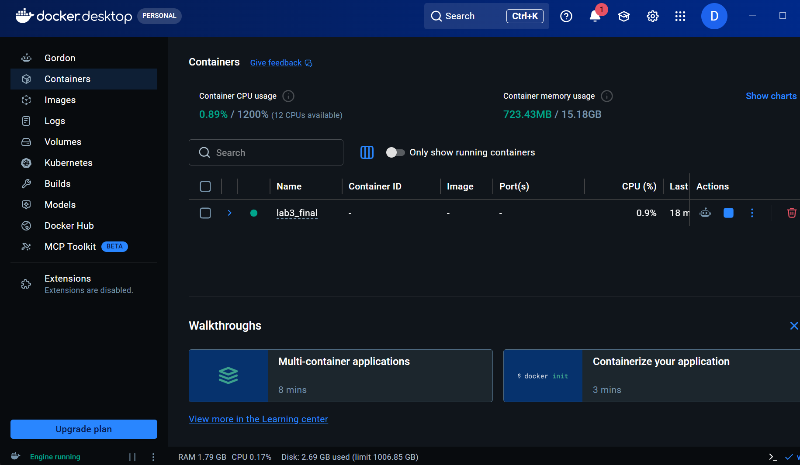
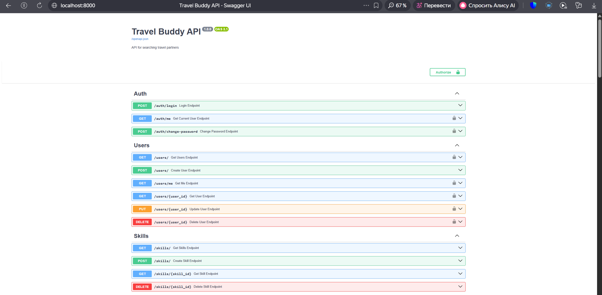
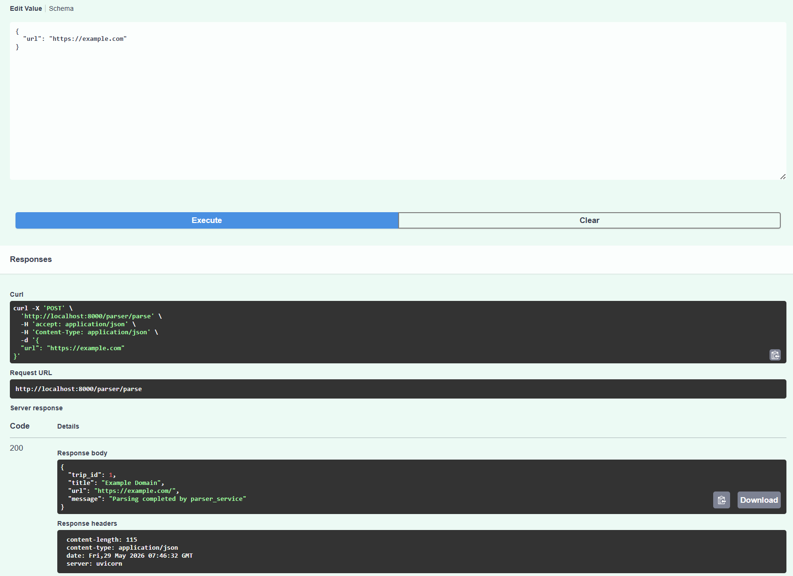
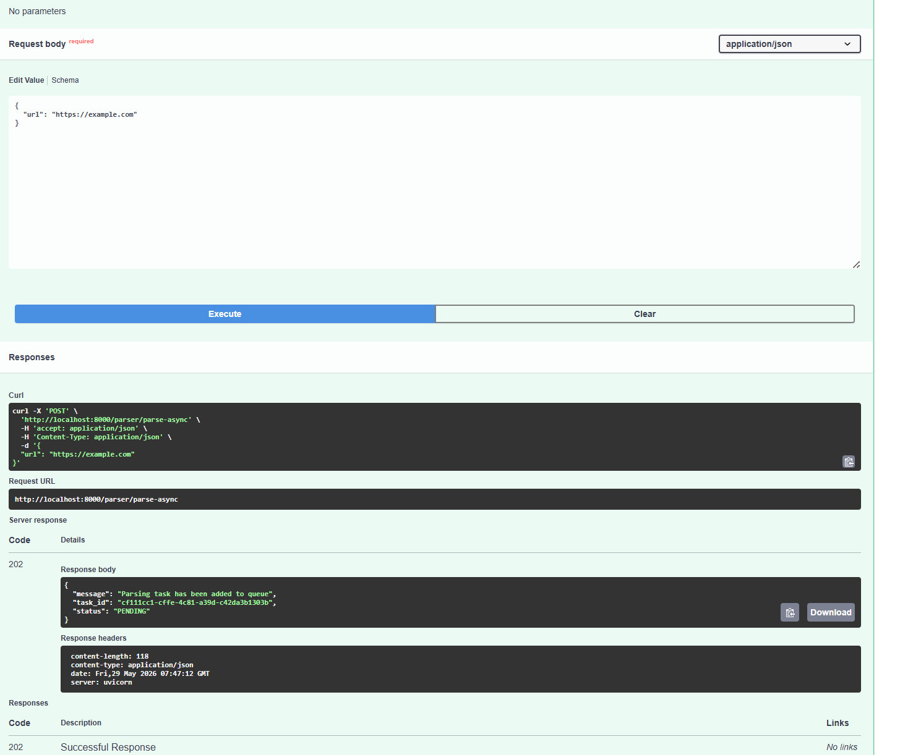
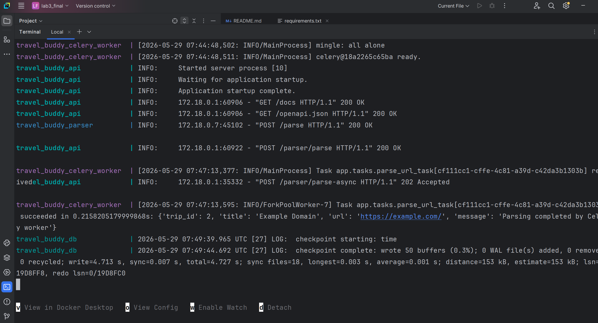
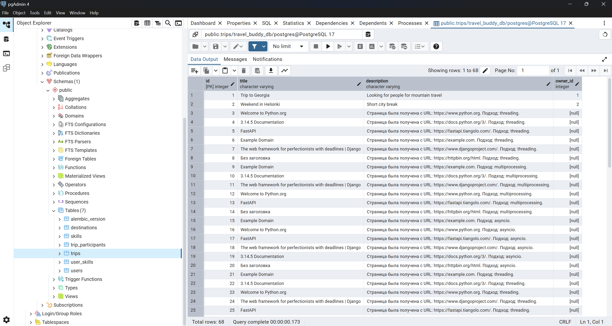

Лабораторная работа №3. Docker. Celery. Redis
Цель работы
Изучить контейнеризацию приложений с использованием Docker и Docker Compose, а также реализовать асинхронную обработку задач с помощью Celery и Redis.
Описание работы
В качестве основы был использован FastAPI-проект из предыдущих лабораторных работ.
В рамках лабораторной работы были реализованы:
- контейнеризация FastAPI-приложения;
- контейнеризация PostgreSQL;
- отдельный parser service;
- взаимодействие сервисов по HTTP;
- Redis как брокер сообщений;
- Celery worker для фоновых задач;
- асинхронная постановка задач в очередь.
Используемые технологии
- Python 3.13
- FastAPI
- PostgreSQL
- SQLAlchemy
- Docker
- Docker Compose
- Redis
- Celery
- Requests
- BeautifulSoup4
Архитектура проекта
В проекте используются следующие контейнеры:
travel_buddy_api— основной FastAPI API;travel_buddy_parser— сервис парсинга страниц;travel_buddy_db— PostgreSQL;travel_buddy_redis— Redis broker;travel_buddy_celery_worker— Celery worker;travel_buddy_celery_beat— сервис для периодических задач Celery.
Docker Compose
Для запуска всей инфраструктуры использовался Docker Compose.
Команда запуска:
docker compose up --build
Запущенные контейнеры

Swagger документация
После запуска API документация доступна по адресу:
http://localhost:8000/docs
Swagger UI

Parser Service
Был реализован отдельный сервис парсинга веб-страниц.
Сервис принимает URL, загружает HTML-страницу, извлекает заголовок страницы и сохраняет данные в PostgreSQL.
Эндпоинт:
POST /parser/parse
Синхронный парсинг
Пример запроса:
{
"url": "https://example.com"
}
Результат выполнения

Celery и Redis
Для асинхронной обработки задач был реализован Celery worker и Redis broker.
Redis используется как очередь сообщений.
Celery worker получает задачи из Redis и выполняет парсинг страниц в фоновом режиме.
Асинхронный парсинг через очередь
Эндпоинт:
POST /parser/parse-async
После отправки запроса задача помещается в очередь Redis и обрабатывается Celery worker.
Результат постановки задачи

Логи Celery Worker
Во время выполнения задачи Celery worker получает задачу из Redis и выполняет парсинг страницы.
Выполнение задачи Celery

PostgreSQL
После выполнения парсинга данные успешно сохраняются в таблицу trips.
Таблица trips

Анализ результатов
В ходе лабораторной работы была реализована микросервисная архитектура с использованием Docker Compose.
Контейнеризация позволила изолировать сервисы и запускать их независимо друг от друга.
Использование Redis и Celery позволило реализовать очередь задач и выполнять длительные операции в фоновом режиме без блокировки основного API.
Parser service был вынесен в отдельный контейнер, что соответствует принципам микросервисной архитектуры.
Docker Compose значительно упростил запуск всей инфраструктуры и взаимодействие сервисов между собой.
Вывод
В ходе лабораторной работы были изучены:
- Docker;
- Docker Compose;
- Redis;
- Celery;
- контейнеризация FastAPI-приложений;
- асинхронная обработка задач;
- микросервисное взаимодействие.
Была реализована система с несколькими контейнерами, очередью задач и отдельным сервисом парсинга.
Все сервисы успешно взаимодействуют между собой, а данные сохраняются в PostgreSQL.